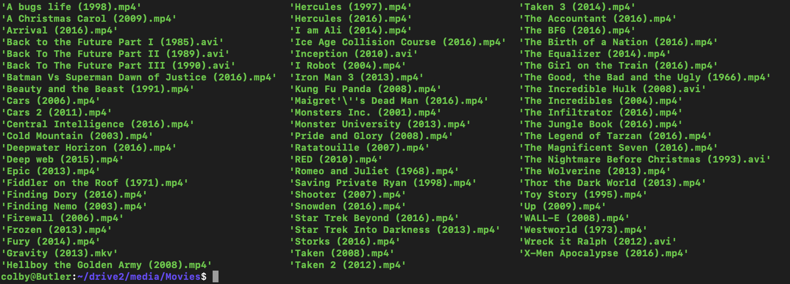
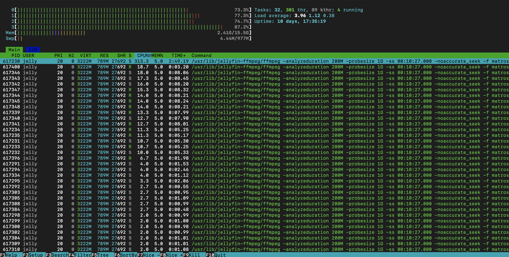

I've wanted to make a server setup in the past, but now that I've got an extra computer I can use, I just decided to go for it. I had some initial goals for this project, but on the way, I learned about Docker, docker-compose, and Linux user and group permissions.
I decided to go with Debian, because it's more of a batteries included distro that has a very easy setup process dedicated for an SSH server. Since I have two drives, I edited the /etc/fstab file to include my hard drive on /home/colby/drive2. The OS was installed on the SSD.
Learning Docker wasn't my initial intent, but I wanted to find a way that I can easily control the resources I can give each program. Docker was perfect for this as I could limit RAM and core-count to each docker container using docker-compose.
Docker also allowed me to easily start/stop/restart services and use seperate users for services to implement the Principle of Least Privilage.
Jellyfin is an open-source alternative to Plex, I've been wanting to try it out to be able to stream my movies on all my devices.
The 2 games I wanted to try out are Minecraft and Satisfactory. I've ran a Minecraft server locally before, but I wanted to know what the performance would be like running it virtualized in a docker container.
Pictures of the computer I used are at the top of the page.
The computer specs are as follows:
This computer is just some random Dell bought off Ebay, I initially bought it to throw a graphics card inside it as a gift for my brother, I think for around $100 at the time. Now, he has my old build, so he let me have this back. The specs aren't incredible, but this is perfect a small home server.
Since this was gonna be my server project, I wanted a way I can make this system more secure and easier to manage. To make this system more secure, I used 'sudo useradd -m NAME' to create a new user with it's own home directory in /home/USERNAME. I then went into /etc/passwd and change the last line of each of these docker users from /bin/bash to /bin/nologin. This makes it so that a real user cannot login to these accounts, only programs can use them to run processes, which is what I want.
The reason I gave the users Home directories is so that they can access files that I provide. I needed this for Jellyfin so that it can read my movies and for game services to have a place to store settings and savefiles. I could've just added these folders into my home directory, but I think having these seperate home directories makes it easier to sort and manage permissions.
For the Docker containers, there ended up being very good pre-made containers on docker hub. I used 3 different containers for Satisfactory, Minecraft, and Jellyfin.
Jellyfin worked pretty seamlessly, all I had to do was define it's user in the docker-compose.yaml file with user: UID:GID, tell it which folders my movies are stored in, and it mostly auto-detected everything. Although, I did have to format all of these video names beforehand, I have a picture of what that looks like
I didn't limit any of the processing because of how weak my cpu is, it actually pins all cores to 70%-95% usage when I stream video. But it does work at the very least.
My one issue with Jellyfin is that my subtitles on shows keep going out of sync. I still haven't found a fix, and I honestly have no idea why it's doing that. Other than that, streaming has been perfect. Just hoping to possibly get a spare GPU to dedicate to transcoding the video to the users on the network.
I initially started this project because of satisfactory, I wasn't having any FPS issues, but I heard online that a dedicated server is very good for the game once you start building bigger factories because it takes some of the load from your computer and lets the server handle it. It actually worked very well, I got a 10-20+ FPS increase, that's pretty significant, although, I was already getting 130-150 before that.
Minecraft is about the same story. Although, running a dedicated server didn't improve my games performance, it's still nice to have a dedicated server as it allows finer control over configuration of a world and user permissions.
This project was pretty fun, and since I have previous experience with Linux, it only took about 3 days to get fully running. I really loved working with Docker, it made managing my services a lot easier as I could just use docker ps to see what containers were running at that current moment, how long they have been running, and what ports they were using.
Overall, this project was very fun, and I do plan on either building a better server in the future, or try to add more services to this one. I want to have a NAS, but this server really doesn't have the storage to act as one. I'm hoping to have a seperate NAS with at least 8TB of storage in the future, maybe 16TB just so that I can use raid 1 for redundancy.